Multiple Linear Regression
Here I have a data set of fish. Please contain your excitement. This is a great data set for checking one's knowledge of the assumptions and missteps that can come with multiple linear regression. The goal is to use a multiple linear regression model to predict the weight of a fish.
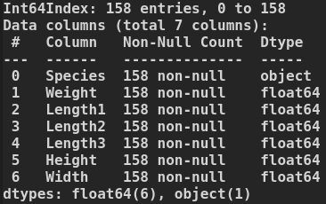 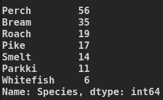
A quick check of the distributions.
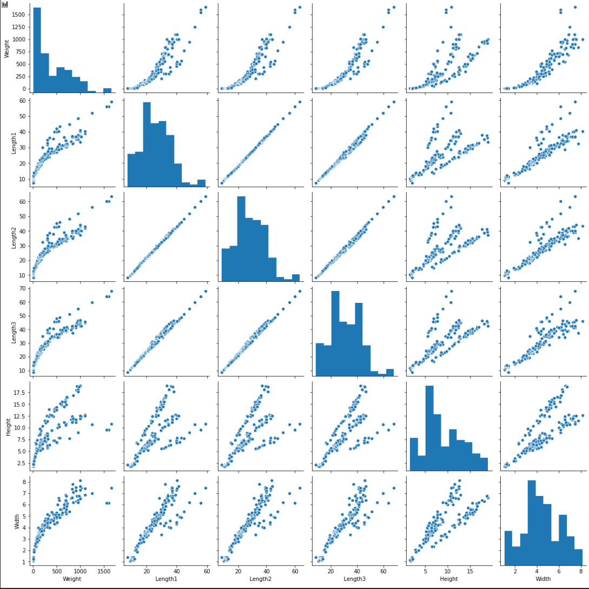
A lot of good info here, mostly in the top row. The first thing that jumps out to me are the distinct groupings in the scatter plots for 'Weight' against the 'Height' and 'Length' variables. The second observation is that the relationship between the dependant and independant variables isn't linear. The third observation is that there is clear multicollinearity among the independant variables (almost perfect among the Lengths). I will address these one at a time.
Non-linear Transformation
To address the non-linear relationship between dependent and independant variables, I test multiple transformations on the 'Weight' variable. My best option turns out to be an exponential transformation of (1/3).
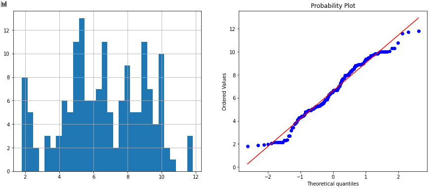 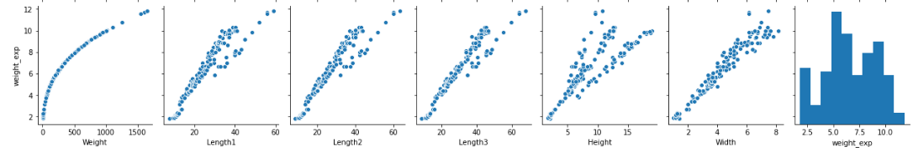
That's better. Now the relationship is linear.
Multicollinearity This can be a serious problem, but how bad is it?
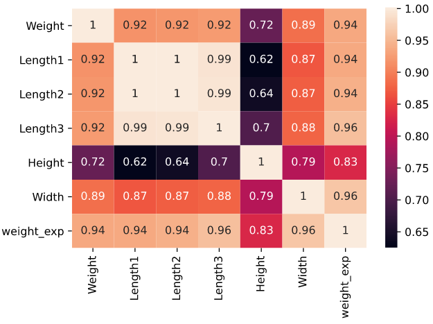
It's bad. I keep only Length3 of the three lengths available, as they are almost the same data. I keep 'Length3' as it has the highest correlation with the depedant variable by a tiny margin. However, 'Weight' and 'Height' share a high correlations as well. I'll take a closer look at these variable before making any decisions.
Height: 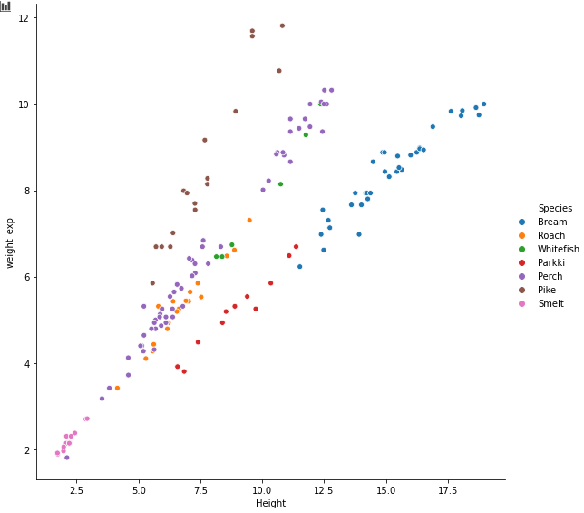
Width: 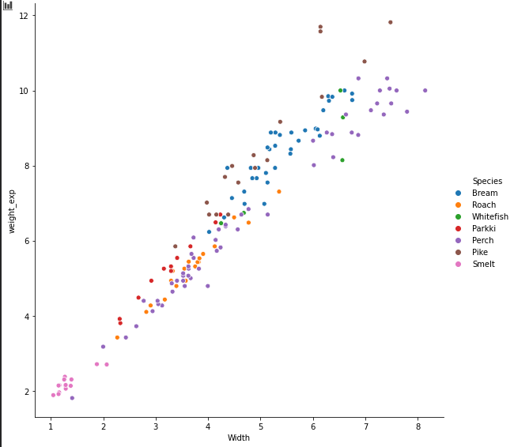
Length:
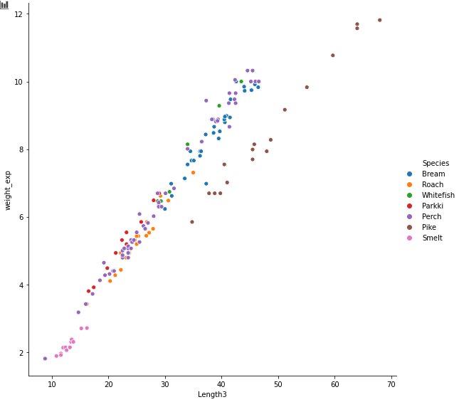
After a cursory glance, I see that these groupings are clearly the result of being from a different species. With Pike being it's own group in both 'Length' and 'Height', and Parkki and Bream dilineating into a grouping in 'Height'.
To get an idea of the how badly these outliers affect predictions, I build a linear model with 'Width' as the only predictor variable. I then plot the absolute residuals against the 'Width'. As expected, the outliers cause massive residuals and pronounced heteroskedasticity.
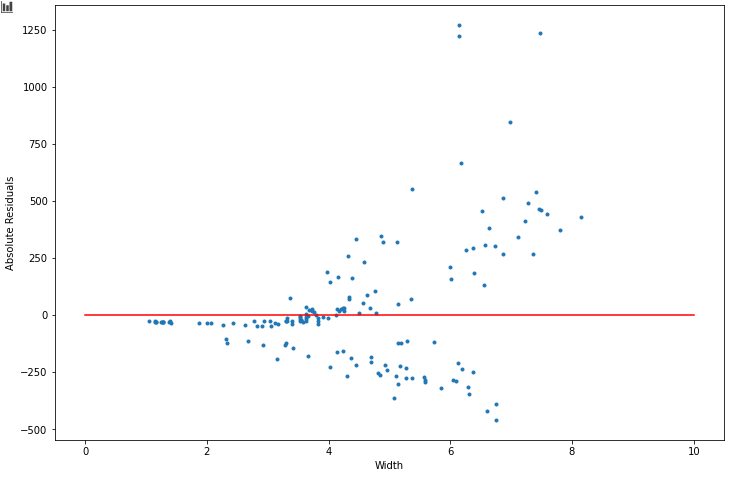
There are definitely many ways I could go about dealing with this, but I'm going to inject a few binary groupings into the data-set. The first group is 'IsPike', because it is it's own separate group in 'Height' and 'Weight'.
I also create two 'HeightGroup' variables 'HeightGroup1' and 'HeightGroup2' for the differen't groupings present in 'Height'. Lastly, I create an 'IsBream' to help the model keep the higher end residuals under control. By separating Bream into it's own group, I am hoping the model will notice the difference in 'Width' groupings among Bream and Perch - a less obvious division but a cause of some of the larger residuals.
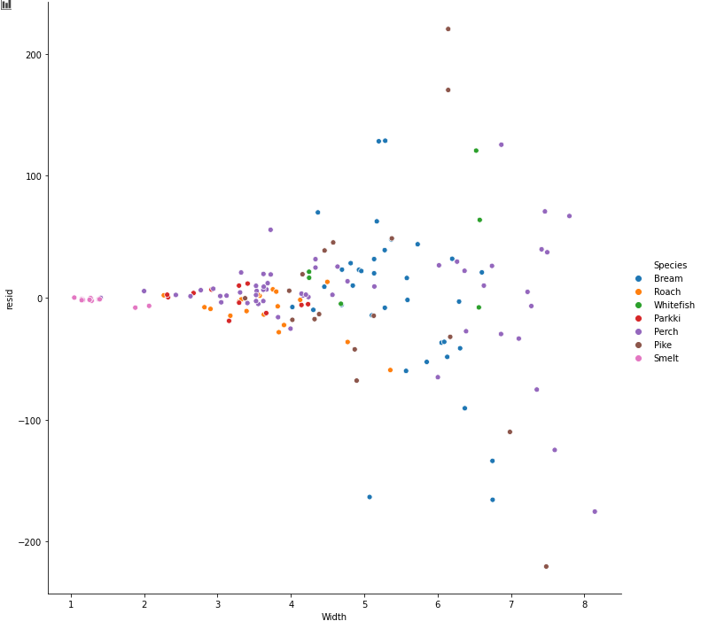
The new range of absolute residuals has decreased dramatically.
There is still work to be done here. I will update this project soon with any progress.